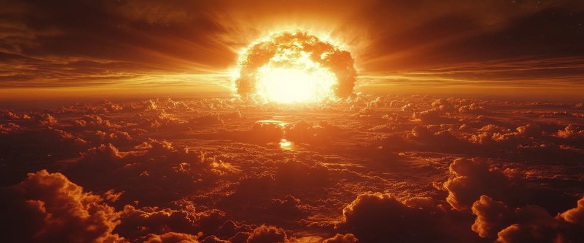

Nuclear weapons are the most destructive force human beings have ever created. They have shaped global politics, altered the course of wars, and still threaten our existence today. And yet for many, the science behind the bomb remains a mysterious mix of physics and chemistry wrapped in a veil of government secrecy.
To truly understand what makes nuclear weapons so deadly, it helps to understand how they work. The destructive power of nuclear weapons comes not from size, but from the forces of nature they unleash at the subatomic level – forces that make those in conventional weapons pale by comparison.
Breaking Atoms: Where the Energy Comes From
It all starts with nuclear binding energy, the mysterious force that holds protons and neutrons together inside the nucleus of atoms. Nuclear binding energy acts something like gravity, but it is not gravity. Scientists don’t know what it is. But they do know it can be harnessed for nuclear power and nuclear weapons.
To explain, the nucleus at the center of atoms normally contains an equal number of protons and neutrons. But the nucleus in certain heavy elements like uranium may be ‘neutron-rich,’ with substantially more neutrons than protons. Constant pressure to correct that imbalance sometimes causes an excess neutron to be spontaneously emitted from a neutron-rich nucleus to travel freely through space.
If that ‘free-neutron’ strikes the nucleus of another ‘neutron-rich’ atom, it may cause it to fission and expel more than one neutron as well. As used here, fission just means to divide or split apart. And if each of those free neutrons strikes another nucleus…
This is a simplified description of a supercritical chain reaction that occurs when a nuclear weapon explodes. A tremendous amount of nuclear binding energy is released each time atoms fission, and about eighty generations of fissions will produce a powerful blast like the Hiroshima bomb. That can happen in about a microsecond, or a millionth of a second. Neutrons travel fast.
Fission: The First Nuclear Weapons
Nuclear weapons were made possible by uranium, a neutron-rich element. Plutonium is neutron-rich as well, but there is not enough plutonium in nature to mine it like uranium is mined. So, plutonium is made in nuclear reactors by ‘burning’ uranium fuel, then separating the plutonium byproduct from the reactor fuel waste.
The atomic bombs dropped on Hiroshima and Nagasaki during WWII were both fission weapons. They worked by forcing the nuclei of heavy isotopes like uranium-235 or plutonium-239 to split apart. More neutrons were then expelled to split more atoms in a self-sustaining chain reaction that continued until the binding energy holding them together was released in a massive explosion that blew the bombs apart.
As used in the preceding paragraph, the word “isotopes” refers to distinct forms of the same element with a different number of neutrons in the nucleus of their atoms. For example, all forms of uranium have 92 protons in their atom’s nucleus. That’s what makes them uranium. Just as all hydrogen atoms have one proton in their nucleus, gold atoms have 79 protons, and so on.
It turns out that one of the most formidable obstacles to building nuclear weapons is enriching uranium. Natural, metallic uranium contains two primary isotopes – uranium 235 (U235) and uranium-238 (U238). Both isotopes have 92 protons, but U235 atoms have 143 neutrons while U238 atoms have 146 neutrons. (92 + 143 = 235 and 92 + 146 = 238.)
The distinction is important because different isotopes of the same element act in very different ways. Both isotopes are uranium in this case, but U235 can be used by itself for nuclear weapons while U238 cannot. Yet U235 constitutes less than 1% of uranium ore, while U238 constitutes over 99%. Those conflicting facts mean that uranium must undergo a refinement process called enrichment to gradually increase the percentage of U-235. Weapons-grade uranium contains at least 90% U235, but the percentage can be less if more material is used.
Critical Mass
In the Hiroshima bomb, a gun-type mechanism fired two pieces of uranium-235 into each other, creating a critical mass to start the chain reaction. It was the only gun-type nuclear weapon ever built. In the Nagasaki bomb, a more advanced implosion design squeezed plutonium into a supercritical state. Of course, none of that makes any sense without some basic knowledge of critical mass and how it works.
Picture a sphere of weapons-grade uranium the size of a golf ball. Now, suppose a U235 atom inside the ball fissions and ejects two neutrons that both strike the nucleus of another U235 atom. Nothing much happens because a golfball-sized sphere of weapons-grade uranium is not large enough to support a nuclear chain reaction. It is not a critical mass.
The reason is that free neutrons travel an average distance in any given substance before striking a nucleus. They may hit one right away, or they may travel several inches first, but there is an average distance they travel before they do. A golfball-sized sphere of weapons-grade uranium is so small that most free neutrons escape the ball and fly off into space before they strike another nucleus. But a sphere the size of a bowling ball is another story.
The larger sphere greatly improves the odds that free neutrons will strike a U235 nucleus inside the ball and sustain the reaction. Most of them must travel a greater distance to escape the larger sphere into space, and naturally meet more potential nucleus targets along the way.
But the importance of critical mass to nuclear bomb-building is this: If enough fissile material is brought together to support a supercritical chain reaction, it will explode. Nothing more needs to happen. Just bring enough fissile material together into one piece, and a nuclear explosion will automatically occur.
Gun-type Simplicity
The gun-type atomic bomb dropped on Hiroshima was based on that principle. Picture a heavy steel cylinder like a cannon barrel that’s open on one end. Push some weapons-grade uranium down the barrel to the solid end, but not quite enough for a critical mass. Then place more uranium just inside the open end, topped off by some conventional explosives. Finally, cap the open end and detonate the device.
When the explosive charge detonates, it drives the uranium ‘bullet’ in front of it down the barrel into the other piece. Neither piece is large enough to form a critical mass by itself, but together they are enough. The instant they join a critical mass is formed and the bomb explodes.
Fission bombs are devastating. Powered by uranium, the Hiroshima bomb destroyed nearly everything within two miles and eventually killed over 220,000 people, at least by US DOE and City of Hiroshima estimates. But the atomic bomb dropped on Nagasaki three days later was powered by plutonium.
Density and Critical Mass
It turns out that density is one of the factors that determines critical mass. The greater the density, the less material is required to be critical. As it happens, doubling the density of plutonium reduces the amount required to be critical by a factor of four. So if a near-critical sphere of plutonium is sufficiently compressed, a point will be reached where it eventually goes critical and explodes.
But how do you compress a metal as hard and dense as plutonium precisely when you want to? Overcoming that obstacle was a major barrier toward building plutonium implosion bombs, and still is. The solution involves completely surrounding near-critical plutonium cores with shaped explosive charges that direct most of their force inward. If the charges detonate at precisely the same moment, a perfectly uniform shockwave will compress the plutonium and make it go critical.
But what was originally thought of as the nuclear endgame turned out to be just the beginning of the nuclear weapons story.
Fusion: The Hydrogen Bomb
Scientists developed a follow-on device in the years following World War II – the thermonuclear hydrogen bomb that uses both fusion and fission to drive the reaction.
Fusion reactions power the stars. If nuclei in the hydrogen isotopes deuterium and tritium can be forced to merge together into heavier helium nuclei, more energy is released than with fission alone.
But fusion requires extremely high temperatures and pressures to work – conditions that are created in a hydrogen bomb by an atomic bomb trigger.
Hydrogen bombs are vastly more powerful than atomic bombs. The Hiroshima atomic bomb yielded about 15 kilotons, but the largest hydrogen bomb ever tested released about 57 megatons – more than 3,800 times as powerful.
Those weapons make it possible to destroy not just cities, but to obliterate entire regions and alter the planet’s climate to deadly effect for years.
Blast, Heat, and Radiation
When a nuclear bomb detonates, the energy is released in several forms:
- Blast: The shockwave from a nuclear explosion can level buildings, damage vehicles, and kill people from blunt force trauma.
- Radiation: Powerful gamma and neutron radiation can kill fast. Radioactive fallout from fission products may contaminate air, water, and soil for miles, creating long-term health hazards like cancer and birth defects.
- Fire: Intense thermal radiation ignites mass fires over wide areas and severely burns flesh even miles away. Mass fires can pollute the stratosphere enough to create a nuclear winter that devastates agricultural production worldwide. Widespread starvation logically follows – the deadliest consequence of nuclear war.
Any one of those effects makes nuclear weapons not only an immediate threat, but one with terrible consequences that remain long after the dramatic explosions are over.
Why the Science Matters
Understanding the science behind nuclear weapons is not just an academic exercise. It reveals why these weapons are so dangerous and why nuclear disarmament is essential for our continued survival.
The physics of nuclear weapons also reminds us how complex and fragile our world truly is, and the responsibility we all bear in keeping it safe.
A Policy Choice
Nuclear weapons were created by human beings. Their continued existence is a human choice. Policies that improve or expand nuclear arsenals reflect government decisions that can be changed.
At Our Planet Project Foundation, we believe the first step toward eliminating this threat is understanding it. Science gave us the knowledge to create nuclear weapons, but also to eliminate them. Yet only our collective will can harness that knowledge to remove them from our future.